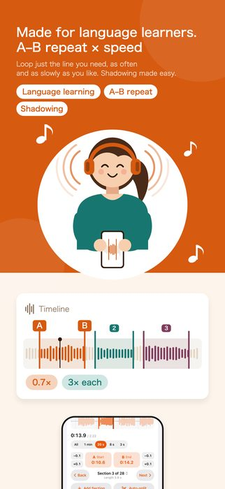
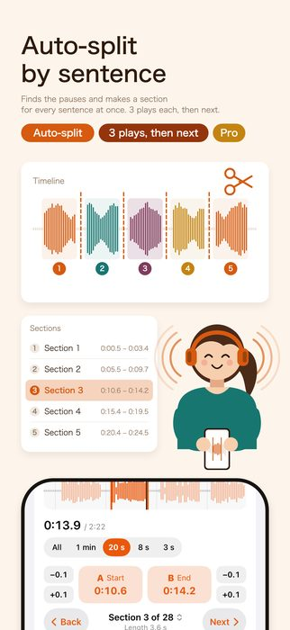
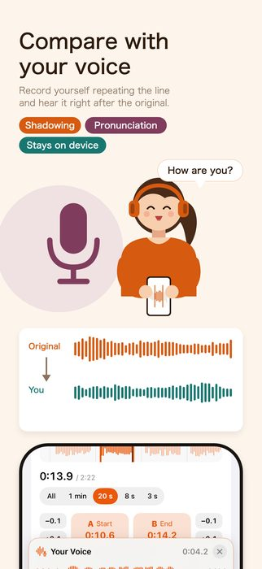
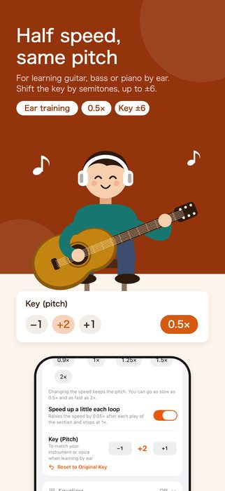
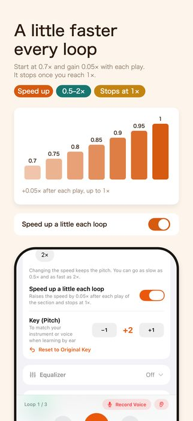
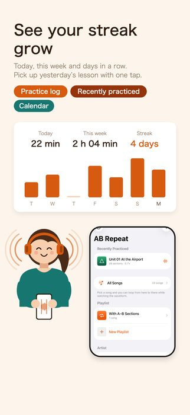
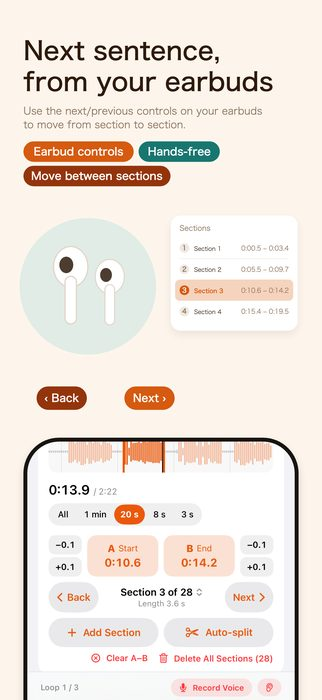
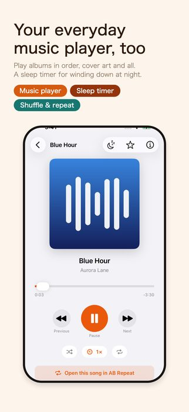
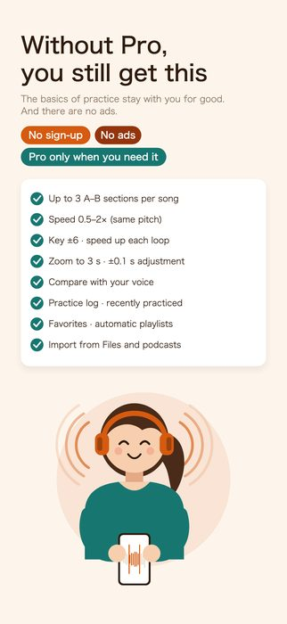
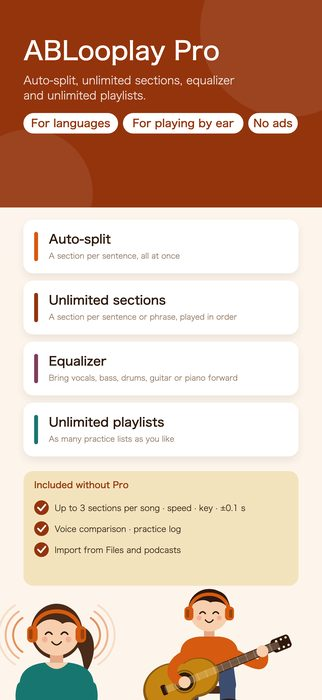

From here to there, as many times as you like. Slow it down and the pitch stays the same (iOS 17 or later)
Download on the App Store (free)










Languages — Set A and B on the phrase you couldn't catch and repeat it until your mouth gets used to it. There is a pause between repeats, so you can say it yourself right after you hear it. Shadowing and checking your pronunciation both happen on this one screen.
Learning by ear — Slow a fast phrase down to 0.5× and the pitch stays the same. Repeat only the part you want to pick out, and zoom in to 8 seconds to see the individual notes.
If you are listening along and miss a sentence, tap “Loop This Sentence” in the bar at the bottom (“This Line” on the Music player). Without pressing A or B, the app finds the silence before and after that sentence, makes it a section, and loops it.
Tap “Auto-split” and the app looks for the gaps in the sound and makes a section for each sentence all at once. Set “Plays before moving on” to 3, and you hear each sentence three times, then move on to the next. Even long lessons play through to the end, hands-free. Your earbuds' next and previous controls move between sentences too.
Record yourself imitating the section, and hear “Original → You” back to back. Differences in pronunciation and intonation that are hard to notice yourself become clear to your ear. Recordings stay on your device only.
After you record, the original and your voice appear as waveforms on the same time scale, so you can see a late start or a difference in length. With “Record After Original”, recording starts automatically once the original has finished playing, and stops automatically. Before recording, the app counts 3, 2, 1 and shows the sentence to repeat (you can turn off the count in Settings).
Load a timed script (LRC) or subtitles (SRT, VTT), and the sentence being played appears under the waveform. You can make a section from each line, and the section is named with that sentence. With subtitles, the end of each subtitle becomes the section's B. Bilingual scripts that pair each sentence with a translation (such as English sentences with Japanese translations) show the translation in small type under the sentence. Tap ≡ to the right of the sentence to read the whole script, and tap a sentence to jump to it.
Lesson text without timings works too: on sections made with Auto-split, use “Paste Text and Assign to Sections”, and each section is named with one sentence.
Hide the text, listen by ear alone and write down what you hear, and the words you missed are marked in color. Touch and hold the eye button to hide the text on the first play only and listen with the text from the second play on. Sentences you can now say can be given a “Learned” mark.
Once A and B are both set, that section starts repeating right away. Between repeats there is a 0.5-second pause (you can also turn it off).
Whether this gap is there changes what you can use the app for. With a pause, right after you hear a phrase you have room to say it or play it yourself. Shadowing and phrase-by-phrase practice only work because of this gap.
From 0.5× to 2×, in steps of 0.05. Slow it down and the pitch does not drop. Fast-talking dialogue and fast phrases can be slowed to a speed you can keep up with.
Turn on “Speed up a little each loop” and the speed rises by 0.05× each time the section plays, stopping at 1×. You can also change the key (pitch) in semitones, up to ±6, to match your own instrument when learning by ear.
The waveform zooms to the whole song, 1 minute, 20 seconds, 8 seconds or 3 seconds (with the buttons, or by pinching with two fingers). When zoomed in, the black line stays in the center, and you slide the waveform left and right to line it up precisely with the start of a word or a note. You can also drag the A and B tabs with your finger, or nudge them with the ±0.1 s buttons.
See today, this week and your streak (days in a row) in the Settings tab. At the very top of the AB Repeat tab, “Recently Practiced” lists your songs, so you can pick up where you left off yesterday with one tap.
You can also see a daily goal (how many minutes are left, with a notice when you reach it) and your practice time per song. You can get a practice reminder every day, too.
The first time you open the app, a tutorial starts. With a practice track of eight English sentences, arrows guide you one step at a time: from setting A and B, to making a section for each sentence and going through them one sentence at a time, to recording your voice and comparing.
Switch between “Music” and “AB Repeat” with the tabs at the bottom. Music is a plain screen with just the artwork, the title and the skip buttons. It moves on to the next song in album order, keeps playing with the screen off, and can be controlled from the Lock Screen.
Add MP3s from the Files app one at a time or a whole folder at once. You can also copy them from a computer straight into “On My iPhone > ABLooplay”. m4a, wav and aiff files, songs from your music library (those without copy protection) and podcast episodes can be added too.
You can also import from videos. Use “From Videos in Photos” under ＋ in the list, or share a video from another app: only the audio is extracted, and you can practice with it just like any other track.
The app reads the information written into each file (ID3 tags) and sorts tracks by artist → album → song. Artwork appears in the list and on the player too. Files without tags are grouped by the name of the folder you added them from.
Title, artist, album and track number can be edited inside the app — for a single song, or for a whole album or artist at once. When you edit them, the app also moves the files within the Files app into an Artist → Album layout, so the folders on your iPhone and the order on screen never disagree.
It was made for MP3, but it also opens m4a, wav, aiff and others. From the ＋ at the top right of the list, choose songs one at a time or add a whole folder. You can also copy files from a computer straight into On My iPhone > ABLooplay in the Files app.
Songs with copy protection, such as Apple Music songs, cannot be opened by other apps, so they can't be used. Songs in your music library that have no copy protection can be imported. Podcast episodes can be added too.
The features were made for exactly that. Set A and B on the few seconds you can't catch, slow it down to around 0.7×, and say it yourself in the pause between repeats — you can go round this cycle on one screen.
Yes. A fast phrase keeps its pitch even at half speed, so you can check it on your instrument as it is. Zoom the waveform in to 8 seconds and you can see where each note starts.
No. Your songs and your recordings stay on your device only. The app only goes online when you search for or download podcasts. There are no ads either.
Importing songs, up to 3 sections per song, ±0.1 s adjustment, speed, key, speeding up each loop, the pause between repeats, the number of plays, comparing with your own voice, the practice log, favorites, and up to 2 playlists — basic practice is free.
ABLooplay Pro adds auto-split, unlimited sections per song, the equalizer and unlimited playlists. Choose a yearly (with a 7-day free trial), 6-month (with a 7-day free trial) or monthly auto-renewing subscription, or a one-time purchase. You can cancel at any time in the Settings app → [your name] → Subscriptions.
It supports 10 languages: Japanese, English, Simplified Chinese, Traditional Chinese, Korean, German, French, Spanish, Portuguese (Brazil) and Italian. It switches to match your iPhone's language setting.
Questions and requests are welcome at tatlink002@gmail.com. Please also see the privacy policy.